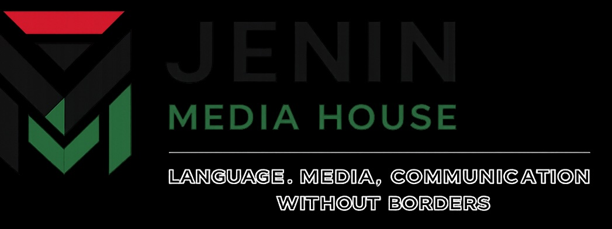
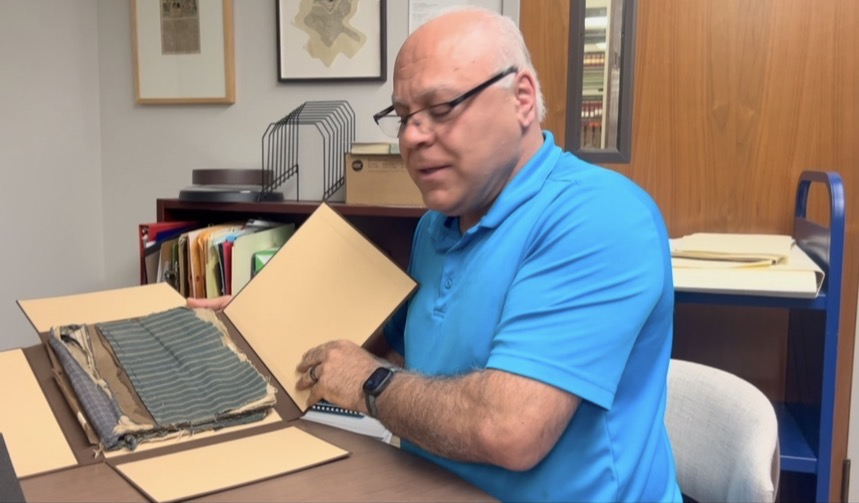

Jenin Media House provides professional translation, media, consulting, and cross-cultural communication services connecting Morocco, the Arab world, and international clients.
Jenin Media House is a Morocco-based language, media, and communications company serving individuals, businesses, organizations, and international clients. Our work combines professional translation, multilingual communication, media services, research, and practical cross-cultural support connecting Morocco with the Arab world and international communities.

Research, archives, and historical documentation connect the stories of the past with the audiences of today.
Professional translation services for documents, business communications, media materials, and other multilingual content.
Assistance with certified and sworn translations through qualified professional translators for official and administrative documents.
Media research, content development, communication support, and multilingual media projects.
Cross-cultural and practical consulting services for individuals and organizations working between Morocco and international markets.
Communication and practical support for international residents and businesses navigating services in Morocco.
Research assistance, document preparation, multilingual correspondence, and information services.
Find trusted Moroccan professionals, teachers, creatives, service providers, and independent specialists.
Learn languages and other subjects online with qualified Moroccan teachers and tutors.
Explore Teachers →Connect with professional translators, interpreters, and multilingual language specialists.
Explore Language Professionals →Discover Moroccan web developers, graphic designers, artists, video editors, and digital creatives.
Explore Creative Talent →Connect with verified lawyers, accountants, real estate professionals, and business consultants in Morocco.
Explore Professionals →Connect with verified doctors, dentists, veterinarians, clinics, eye centers, and other healthcare professionals.
Explore Health Professionals →Find drivers, airport transfers, meet-and-greet services, private transportation, and local transportation providers.
Explore Transportation Services →Find real estate professionals, movers, contractors, furniture providers, home services, and relocation specialists.
Explore Home & Relocation Services →Find trusted caregivers, childcare providers, personal assistants, local guides, fitness professionals, and personal service providers.
Explore Personal & Family Services →Discover local guides, private tours, travel assistance, cultural experiences, excursions, and tourism professionals.
Explore Travel & Local Experiences →Find electricians, plumbers, carpenters, painters, AC technicians, mechanics, handymen, and other skilled service professionals.
Explore Skilled Services →Join the JMH Professional Network and connect with expats, international residents, businesses, and clients abroad looking for trusted Moroccan talent and professional services.
Join Our Professional Network →📍 Casablanca – Nouaceur, Morocco
Professional inquiries, translation requests, media projects, research, and consulting inquiries are welcome.
Send an Inquiry Message us on WhatsApp